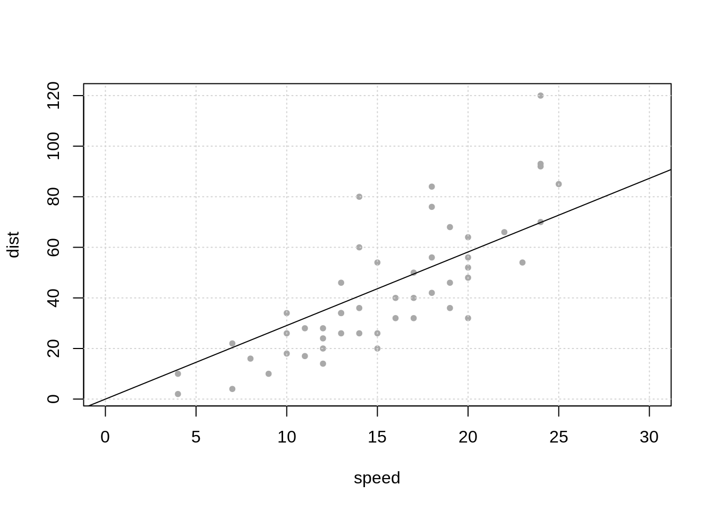
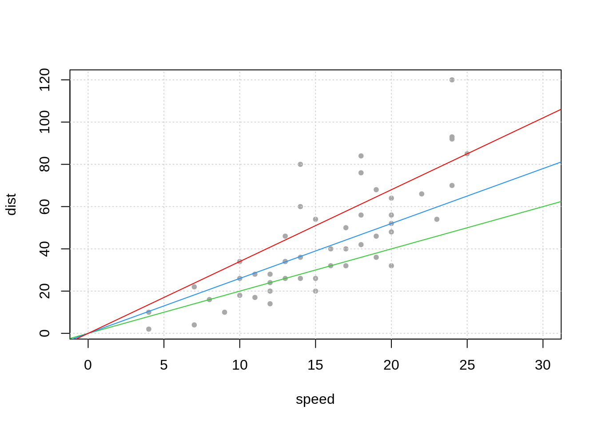
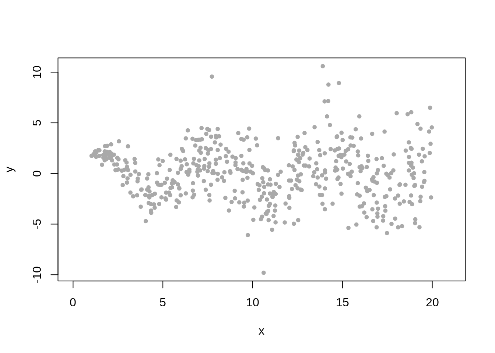
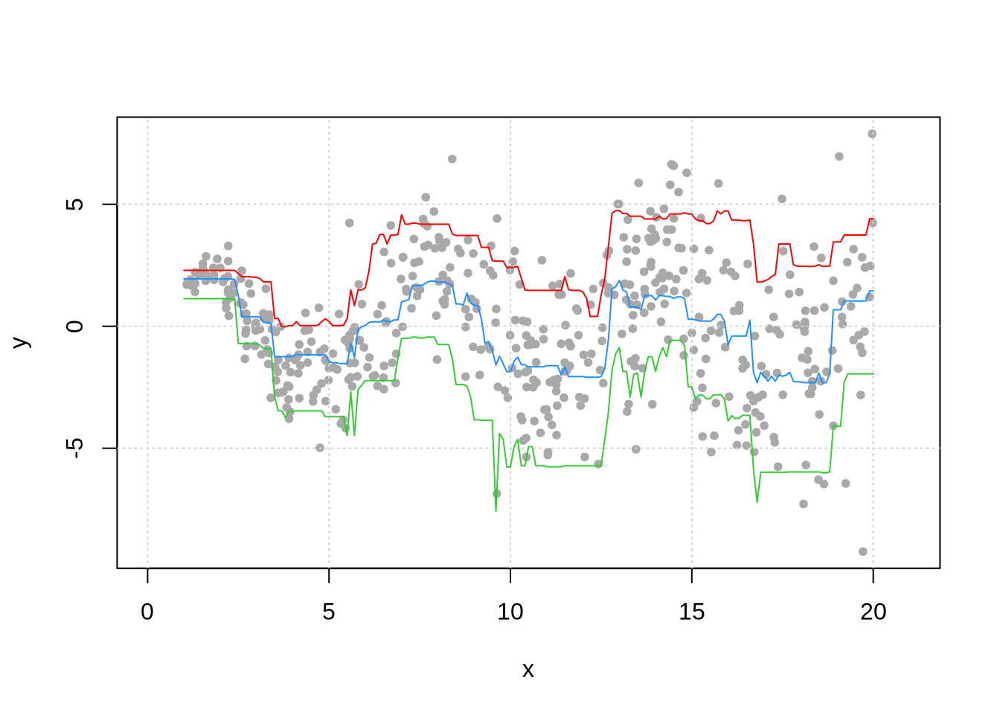

Chapter 28 Why Estimate Just The Mean?
mod_lm = lm(dist ~ 0 + speed, data = cars)
mod_qr = rq(dist ~ 0 + speed, data = cars, tau = c(0.25, 0.50, 0.75))## [,1] [,2] [,3]
## [1,] 8 10.4 13.6
## [2,] 8 10.4 13.6
## [3,] 14 18.2 23.8
## [4,] 14 18.2 23.8
## [5,] 16 20.8 27.2
## [6,] 18 23.4 30.6
## [7,] 20 26.0 34.0
## [8,] 20 26.0 34.0
## [9,] 20 26.0 34.0
## [10,] 22 28.6 37.4
## [11,] 22 28.6 37.4
## [12,] 24 31.2 40.8
## [13,] 24 31.2 40.8
## [14,] 24 31.2 40.8
## [15,] 24 31.2 40.8
## [16,] 26 33.8 44.2
## [17,] 26 33.8 44.2
## [18,] 26 33.8 44.2
## [19,] 26 33.8 44.2
## [20,] 28 36.4 47.6
## [21,] 28 36.4 47.6
## [22,] 28 36.4 47.6
## [23,] 28 36.4 47.6
## [24,] 30 39.0 51.0
## [25,] 30 39.0 51.0
## [26,] 30 39.0 51.0
## [27,] 32 41.6 54.4
## [28,] 32 41.6 54.4
## [29,] 34 44.2 57.8
## [30,] 34 44.2 57.8
## [31,] 34 44.2 57.8
## [32,] 36 46.8 61.2
## [33,] 36 46.8 61.2
## [34,] 36 46.8 61.2
## [35,] 36 46.8 61.2
## [36,] 38 49.4 64.6
## [37,] 38 49.4 64.6
## [38,] 38 49.4 64.6
## [39,] 40 52.0 68.0
## [40,] 40 52.0 68.0
## [41,] 40 52.0 68.0
## [42,] 40 52.0 68.0
## [43,] 40 52.0 68.0
## [44,] 44 57.2 74.8
## [45,] 46 59.8 78.2
## [46,] 48 62.4 81.6
## [47,] 48 62.4 81.6
## [48,] 48 62.4 81.6
## [49,] 48 62.4 81.6
## [50,] 50 65.0 85.0plot(dist ~ speed, data = cars, pch = 20, col = "darkgrey", xlim = c(0, 30))
grid()
abline(a = 0, b = coef(mod_lm))
plot(dist ~ speed, data = cars, pch = 20, col = "darkgrey", xlim = c(0, 30))
grid()
abline(a = 0, b = coef(mod_qr)[1], col = "limegreen")
abline(a = 0, b = coef(mod_qr)[2], col = "dodgerblue")
abline(a = 0, b = coef(mod_qr)[3], col = "red")
gen_weird_data = function(sample_size = 500) {
x = runif(n = sample_size, min = 1, max = 20)
y = 2 * sin(x) + rnorm(n = sample_size, sd = log(x))
tibble(x, y)
}weird_data = gen_weird_data()
plot(y ~ x, data = weird_data, pch = 20, col = "darkgrey", xlim = c(0, 21))
x_seq = matrix(seq(1, 20, by = 0.1))
mod_qrf = quantregForest(x = as.matrix(weird_data$x), y = weird_data$y, nodesize = 50)
p = predict(mod_qrf, x_seq)weird_data = gen_weird_data()
plot(y ~ x, data = weird_data, pch = 20, col = "darkgrey", xlim = c(0, 21))
grid()
lines(x_seq, p[, "quantile= 0.1"], col = "limegreen")
lines(x_seq, p[, "quantile= 0.5"], col = "dodgerblue")
lines(x_seq, p[, "quantile= 0.9"], col = "red")